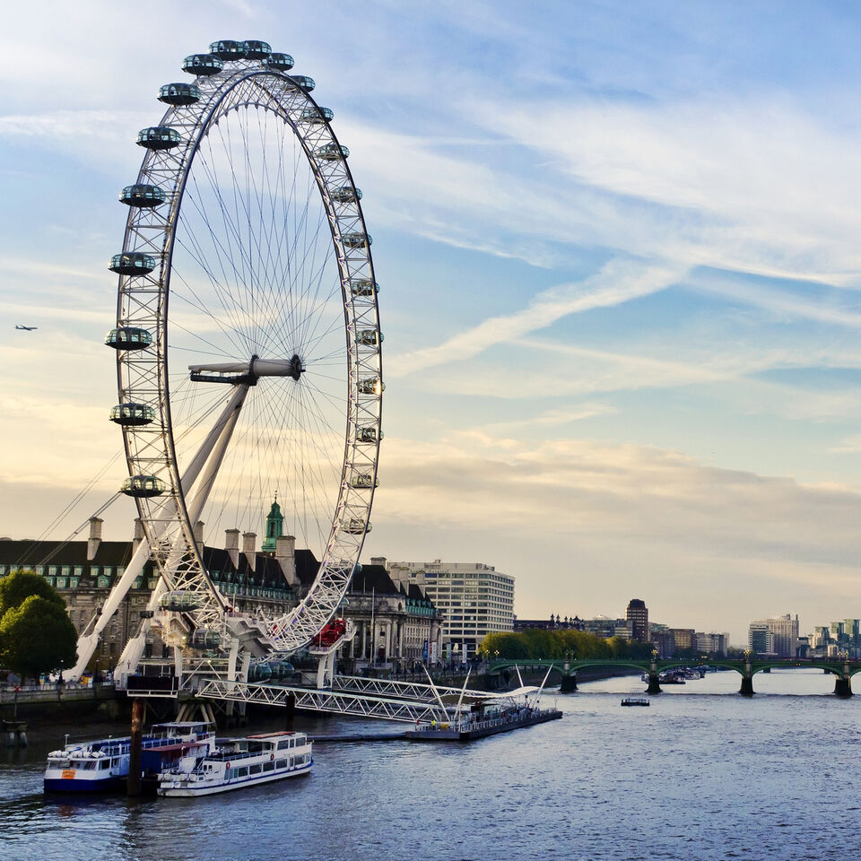

Welcome

London Eye, formerly Millennium Wheel, revolving observation wheel, or Ferris wheel, in London, on the South Bank of the River Thames in the borough of Lambeth. At an overall height of 443 feet (135 metres), the London Eye was the world’s tallest Ferris wheel from 1999, when it was built, until 2006, when it was surpassed by the Star of Nanchang, in Nanchang, China. It is one of London’s most popular tourist attractions for which an admission fee is charged and is sometimes credited with sparking a worldwide revival of Ferris wheel construction.